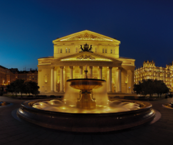

<section class="about">
  <div class="wrapper">
    <h2 class="about__heading heading">
      <span class="colored">О</span> театре
    </h2>

    <div class="about__content">
      <div class="about__about-box about-box">
        <h3 class="about-box__title title">Самый лучший театр СПБ</h3>
        <p class="about-box__description description">
          Как свидетельствуют архивные документы, первое каменное здание
          Большого театра начали возводить в 1775 году по проекту Антонио
          Ринальди. В дальнейшем, после того как Ринальди упал с лесов и не мог
          лично наблюдать за ходом работ, Екатерина II поручила немецкому
          театральному декоратору и архитектору Людвигу Филиппу Тишбейну создать
          новый проект театра, который и был воплощён архитекторами Ф. В. фон
          Бауром и М. А. Деденёвым. Открытие его состоялось в 1783 году, хотя,
          основываясь на других свидетельствах, годом открытия можно считать
          1784 год.
        </p>
      </div>

      <div class="about__info-box info-box">
        <h3 class="info-box__title title">немного о цифрах</h3>

        <div class="info-box__item">
          
          <h4 class="info-box__subtitle subtitle">
            <span class="colored">1600</span> посадочный мест
          </h4>
        </div>

        <div class="info-box__item">
          
          <h4 class="info-box__subtitle subtitle">
            <span class="colored">350</span> лет истории
          </h4>
        </div>
      </div>

      <div class="about__img-box">
        
      </div>
    </div>
  </div>
</section>
